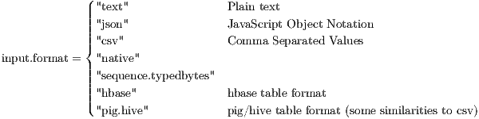
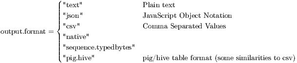
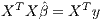
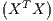
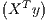
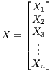
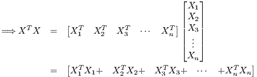
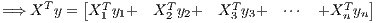

Hadoop Streaming and R
January 4, 2015
Contents
1 RHadoop (rmr2 package)
For any R package to work with hadoop, it must be installed on all clusters with the exact same location
path.
Many rmr2 function will return something called a Big Data Object, a stub with some information on finding
and managing data (the data itself is not loaded into memory until needed). Some functions in rmr2 that return Big
Data Objects are mapreduce, to.dfs, and from.dfs.
We can switch off hadoop, for debugging purposes with
Information gathered here come from the rmr2 help function and the rmr2 tutorial.
1.1 rmr2 Functions
mapreduce(input, output = NULL, map = to.map(identity), reduce = NULL,
vectorized.reduce = FALSE, combine = NULL, in.memory.combine = FALSE,
input.format = "native", output.format = "native",
backend.parameters = list(), verbose = TRUE)
-
mapreduce
- Defines and executes a map reduce job. (Pkg rmr2)
-
input
- Can be:
- A set of file paths in HDFS
- A Big Data Object (a stub of information on some data in HDFS)
- A list of a combination of both
-
output
- A path to the destination folder on HDFS; if missing, a Big Data Object is returned.
-
map
- An optional R function of two arguments, returning either NULL or the return value of keyval, that
specifies the map operation to execute as part of a mapreduce job.
The two arguments represent multiple key-value pairs according to the definition of the mapreduce
model.
- The map function must return key-value pairs. Preferably using the function keyval:
return( keyval(key, val) )
where key, val can be vectors, lists, matricies, data.frames and val can even be NULL
Keys are matched to the corresponding values by position, according to the second dimension if it is
defined (that is rows in matrices and data frames, position otherwise), analogous to the behavior of cbind,
see keyval for details.
-
reduce
- An optional R function of two arguments, a key and a data structure representing all
the values associated with that key (the same type as returned by the map call, merged
with rbind for matrices and data frames and c otherwise), returning either NULL or the
return value of keyval, that specifies the reduce operation to execute as part of a mapreduce
job.
The default is no reduce phase, that is the output of the map phase is the output of the mapreduce job,
see the vectorized.reduce argument for an alternate interface
-
vectorized.reduce
- The argument to the reduce should be construed as a collection of keys and values
associated to them by position (by row when 2-dimensional). Identical keys are consecutive and
once a key is present once, all the records associated with that key will be passed to the
same reduce call (complete group guarantee). This form of reduce has been introduced
mostly for efficiency reasons when processing small reduce groups, because the records are
small and few of them are associated with the same key. This option affects the combiner
too.
-
combine
- refers to:
- A function with the same signature and possible return values as the reduce function, or
- TRUE, which means use the reduce function as combiner.
- NULL means no combiner is used.
-
in.memory.combine
- Apply the combiner just after calling the map function, before returning the results to
hadoop. This is useful to reduce the amount of I/O and (de)serialization work when combining on small
sets of records has any effect (you may want to tune the input format to read more data for
each map call together with this approach, see arguments read.size or nrow for a variety of
formats)
-
input.format
- Input format specification, see make.input.format

-
output.format
- Output format specification, see make.output.format

-
backend.parameters
- This option is for advanced users only and may be removed in the future. Specify
additional, backend-specific options, as in backend.parameters = list(hadoop = list(D =
"mapred.reduce.tasks=1"), local = list()). It is recommended not to use this argument to
change the semantics of mapreduce (output should be independent of this argument). Each
backend can only see the nested list named after the backend itself. The interpretation is
the following: for the hadoop backend, generate an additional hadoop streaming command
line argument for each element of the list, "-name value". If the value is TRUE generate
"-name" only, if it is FALSE skip. One possible use is to specify the number of mappers and
reducers on a per-job basis. It is not guaranteed that the generated streaming command
will be a legal command. In particular, remember to put any generic options before any
specific ones, as per hadoop streaming manual. For the local backend, the list is currently
ignored.
-
verbose
- Run hadoop in verbose mode. No effect on the local backend
-
Note:
- Jobs can be chained together by simply providing the output for one job as the input for another.
The map function should not read from standard input and write to standard output.
Logging and debugging messages should be written to standard error, and will be redirected to the appropriate
logs or to console by the backend.
Example. Mapreduce job for doing a word count
mapreduce(input=’/user/darrellaucoin/input’,
output=’/user/darrellaucoin/out’,
input.format="text", map=(k,lines) {
words.list = strsplit(lines, ’ ’)
words = unlist(words.list)
return( keyval(words, 1) )
},
reduce=function(word, counts) {
keyval(word, sum(counts))
}
)
_________________________________________________________________________________________
-
keyval
- Create a key-value object (a collection of key-value pairs) (Pkg rmr2)
-
key
- Key object: vectors, lists, matricies, data.frames
-
val
- Value object: vectors, lists, matricies, data.frames or NULL
-
Note:
- To retrieve the keys/values from a keyval.Object: keys(keyval.Object) or values(keyval.Object)
_________________________________________________________________________________________
from.dfs(input, format = "native")
-
from.dfs
- Read R objects from HDFS. (Pkg rmr2)
-
input
- A valid path to HDFS or a big.data.object
-
format
- Either
- A string naming the format, or
- A value returned by the function make.input.format
- Returns a key-value pair collection to R
-
Warning:
- This is useful only if a job produces something of reasonable size, like a summary of the
data, that can fit into memory and therefore inspected.
_________________________________________________________________________________________
to.dfs(kv, output = dfs.tempfile(), format = "native")
-
to.dfs
- Write R objects from HDFS. (Pkg rmr2)
-
output
- A valid path to HDFS
-
format
- Either
- A string naming the format, or
- A value returned by the function make.output.format
- Not possible to write out big data with to.dfs, but is useful for making test cases, learning and
debugging.
- The return type is a big data object, a stub with some information on finding and managing data
(the data itself is not loaded into memory)
1.2 Useful R Functions
system(command, intern = FALSE,
ignore.stdout = FALSE, ignore.stderr = FALSE,
wait = TRUE, input = NULL, show.output.on.console = TRUE,
minimized = FALSE, invisible = TRUE)
-
system
- Invokes OS command specified by the character string command. (Pkg base)
-
command
- Character string to be invoked in terminal.
-
intern
- a logical (not NA) which indicates whether to capture the output of the command as an R
character vector.
-
ignore.stdout,
- ignore.stderr a logical (not NA) indicating whether messages written to ‘stdout’ or
‘stderr’ should be ignored.
-
wait
- a logical (not NA) indicating whether the R interpreter should wait for the command to finish,
or run it asynchronously. This will be ignored (and the interpreter will always wait) if intern =
TRUE.
-
input
- if a character vector is supplied, this is copied one string per line to a temporary file, and the
standard input of command is redirected to the file.
-
show.output.on.console,
- minimized, invisible arguments that are accepted on Windows but ignored
on this platform, with a warning.
Example. Command for hadoop to remove previous contents of out
system("${HADOOP_CMD} fs
-rm
-r /user/darrellaucoin/out")
_________________________________________________________________________________________
file.path(..., fsep = .Platform$file.sep)
-
file.path
- Construct a path from components to be easily translated accross different OS (Mac, Windows,
Linux). (Pkg base)
-
...
- character vectors
_________________________________________________________________________________________
strsplit(x, split, fixed = FALSE, perl = FALSE, useBytes = FALSE)
-
strsplit
- Split elements of a character vector x into substrings, split with matches to the regular expression
in split argument. (Pkg base)
-
x
- character vector
-
split
- character vector containing regular expressions to tell when to break the substring. If split has
length 0, x is split to individual characters.
-
perl
- logical. Should perl-compatible regular expressions be used?
-
useBytes
- logical. Should matching be done byte by byte?
_________________________________________________________________________________________
unlist(x, recursive = TRUE, use.names = TRUE)
-
unlist
- Simplifies a list structure x to a vector containing atomic components which occur in x. (Pkg base)
-
x
- a list or vector
-
recurvisve
- logical
-
use.names
- logical. Should names be preserved?
_________________________________________________________________________________________
unlist(x, recursive = TRUE, use.names = TRUE)
-
unlist
- Simplifies a list structure x to a vector containing atomic components which occur in x. (Pkg base)
-
x
- a list or vector
-
recurvisve
- logical
-
use.names
- logical. Should names be preserved?
1.3 Debugging
Debugging is essential to running a MapReduce job and ensuring everything is working correctly. As such, we have
two functions to help us debugg code:
-
Rprof
- when we are running on local mode (using rmr.options(backend = "local") ). When local mode is
turned on, hadoop is never run but a simulation of hadoop entirely within R is run, as such Rprof is
used to collect any debugging information we might need.
- Functions will only be recorded in the profile log if they put a context on the call stack
- Individual statements will be recorded in the profile log if line.profiling is set to TRUE, and if the
code being executed was parsed with source references.
-
rmr.options
- when we are running on hadoop (either in pseudo-distribution or full-distribution mode). When in
hadoop mode, there are several options to collect information to help debug.
- When trying to look for bugs it is usually best look in local mode to find potential problems within R,
then failing that look in hadoop mode for any problems (connections problems between R and Hadoop
etc.)
Profiling works by writing out the call stack every interval seconds, to the file specified
_________________________________________________________________________________________
rmr.options(backend = c("hadoop", "local"),
profile.nodes = c("off", "calls", "memory", "both"),
hdfs.tempdir = "/tmp",
exclude.objects = NULL,
backend.parameters = list())
-
rmr.options
- Set and get package options. (Pkg rmr2)
-
...
- Names of options to get values of, as length of one character vectors.
-
backend
- Use either hadoop, or the current R interpreter, sequentially, for learning and debugging.
-
profile.nodes
- Collect profiling and memory information when running additional R interpreters
(besides the current one) on the cluster. No effect on the local backend, use Rprof instead. For
backward compatibility, "calls" is equivalent to TRUE and "off" to FALSE
- The profiling data is collected in the following files:
file.path(rmr.options("dfs.tempdir"), "Rprof", <job id>, <attempt id>)
-
hdfs.tempdir
- The directory to use for temporary files, including mapreduce intermediate results files, on the
distributed file system (not used when running on the local backend).
-
exclude.objects
- Objects in the Global environment that are not needed by the map or reduce functions, as
character vector.
- This is useful when you have some large R objects that is not needed by the map reduce job
(you don’t need to copy these objects to the nodes)
-
backend.parameters
- Parameters to pass directly to the backend. See equally named argument for the
function mapreduce. Use this setting for backend parameters that need to be different from default but
can be the same from job to job
_________________________________________________________________________________________
Rprof(filename = "Rprof.out", append = FALSE, interval = 0.02,
memory.profiling = FALSE, gc.profiling = FALSE,
line.profiling = FALSE, numfiles = 100L, bufsize = 10000L)
-
Rprof
- Simplifies a list structure x to a vector containing atomic components which occur in x. (Pkg utils)
-
filename
- The file to be used for recording the profiling results.
Set to NULL or "" to disable profiling.
-
append
- logical: should the file be over-written or appended to?
-
interval
- real: time interval between samples.
-
memory.profiling
- logical: write memory use information to the file?
-
gc.profiling
- logical: record whether GC is running?
-
line.profiling
- logical: write line locations to the file?
-
numfiles, bufsize
- integers: line profiling memory allocation
1.4 Linear Least Squares Using RHadoop
To understand the MapReduce framework, lets solve a familar problem of Linear Regression.
For Hadoop/MapReduce to work we MUST figure out how to parallelize our code, in other words
how to use the hadoop system to only need to make a subset of our calculations on a subset of our
data.
-
Assumption:
- The value of p, the number of explanatory variables is small enough for R to easily handle
and n ≫ p.
We know from linear regression, that our estimate of :

and the matrix p×p and p×1 should be small enough for R to solve for with relative ease. We
would therfore only need to find XTX,XTy to get .
To break up this calculation we break our matrix X into submatricies Xi:



XiTXi and XiTyi can be easily calculated in the map phase of our MapReduce job and the addition of XiTXi’s
and XiTyi’s can be done in the aggregation phase (the reduce phase).
1.4.1 Setup
First lets setup the system, and create some variables to test our code on:
Sys.setenv("HADOOP
_PREFIX"="
/usr
/local
/hadoop
/2.2.0")
Sys.setenv("HADOOP
_CMD"="
/usr
/local
/hadoop
/2.2.0
/bin
/hadoop")
Sys.setenv("HADOOP
_STREAMING"="
/usr
/local
/hadoop
/2.2.0
/share
/hadoop
/tools
/lib
/hadoop
-streaming
-2.2.0.jar")
library(rmr2)
library(
data.
table)
#Setup variables p = 10
num.obs = 2000
beta.true = 1:(p+1)
# Make our X matrix X =
cbind(
rep(1,num.obs),
matrix(
rnorm(num.obs
* p),
ncol = p))
y = X
%*% beta.true +
rnorm(num.obs)
X.
index = to.dfs(
cbind(y, X))
rm(X, y, num.obs, p)
############################
Note that since we are only doing a test run in pseudo-distribution mode, we can’t make the num.obs too large
as that would take too long for a single node (our computer) to run. After y and X are written to HDFS, we remove
them, it is good practice to remove variables we no longer need. Or at least not to send unnecessary variables to our
clusters: relieving unnecessary IO burdens in initialization:
rmr.options(exclude.objects=c(’X’,’y’))
1.4.2 Map-Reduce Functions
- To get our Xi in each cluster node, we must first remove the y values.
- In order to aggregate over all values, we must return a fixed value as the key in our map functions
(otherwise they will only aggregate over the same key values)
map.XtX = function(., Xi) {
Xi = Xi[,
-1] #For our calucation, we need to get rid of y values in Xi
keyval(1, list(t(Xi) %
*% Xi))
}
map.Xty = function(., Xi) {
yi = Xi[,1] # Retrieve the y values
Xi = Xi[,
-1] #For the reduce phase, we need to get rid of y values in Xi
keyval(1, list(t(Xi) %
*% yi))
}
Sum = function(., YY) {
keyval(1, list(Reduce(’+’, YY)))
}
# The key here doesn’t matter, as long it is is the same for every # value
- The reason we are returning a list in the map function is because otherwise Reduce will only return a
some of the elements of the matricies.
- list prevents this by Reduce iterating though the elements of the list (the individual XiTXi
matricies) and applying the binary function ’+’ to each one.
- list is used in the reduce function ’Sum’ because we will also use this as a combiner function and
if we didn’t use a list we would have the same problem as above.
1.4.3 MapReduce Job
XtX = values(from.dfs(
mapreduce(input = X.index,
map = map.XtX,
reduce = Sum,
combine = TRUE)))[[1]]
Xty = values(from.dfs(
mapreduce(
input = X.index,
map = map.Xty,
reduce = Sum,
combine = TRUE)))[[1]]
beta.hat = solve(XtX, Xty)
print(beta.hat)
1.4.4 Full Code